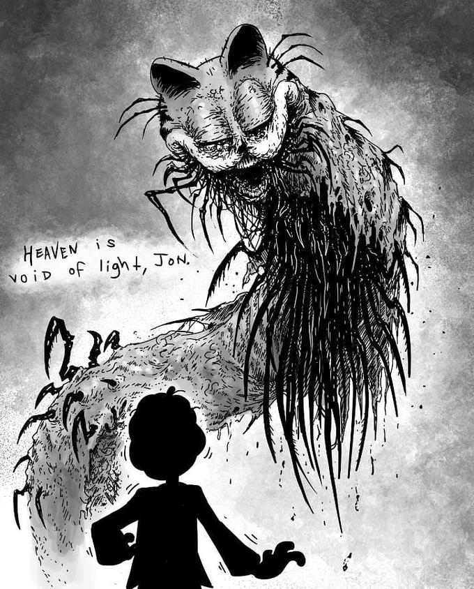
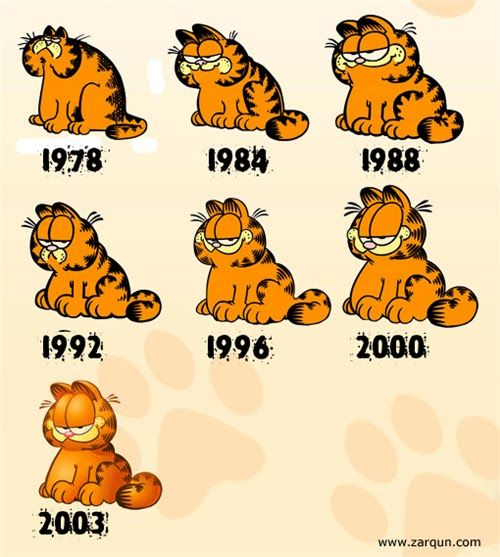

|

|
|
GARFIELD
Garfield es un gato naranja y con sobrepeso que pasa el día comiendo lasaña. Tiene mal humor y su dueño, Jon Arbuckle, sufre el tener que vivir con este animal tan gruñón. Suele abusar verbal y fisicamente a su dueño y al perro de éste, Oddie, simplemente para divertirse. En los últimos, Garfield ha pasado a convertirse en un monstruo en la cultura de internet, convirtiéndose en un personaje lovecraftiano.

Originalmente, Garfield era un personaje de viñetas cómicas creadas por Jim Davis

Han habido unas cuantas películas, éstas son algunas:
- Garfield: The Movie
- Garfield: A Tail of Two Kittens
- Garfield Gets Real
- Garfield's Fun Fest
- Garfield's Pet Force
- Garfield 2024 (aún no ha salido)